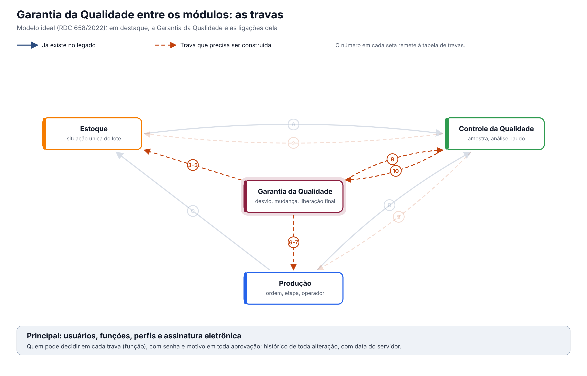

O ideal entre os módulos. A GQ registra as decisões do sistema da qualidade (desvios, mudanças, treinamento, fornecedores, registro do produto). No modelo ideal, cada decisão vira uma trava nos módulos que executam, sem ninguém precisar avisar.
Esta página mostra só as travas que envolvem a Garantia da Qualidade. O documento completo, com a situação única do lote e as 16 regras para todos os módulos, é "Qualidade entre os módulos: situação do lote e travas" (modelo-ideal/01-qualidade-entre-modulos.md), na Visão entre módulos. Os números das travas são os mesmos de lá. Versão 0.1, de 12/10/2026.
1. O desenho

Em destaque, a Garantia da Qualidade. Setas contínuas já existem no legado; tracejadas precisam ser construídas.
2. As travas que envolvem a Garantia da Qualidade
| # | Trava | Referência | O que a Garantia da Qualidade faz | Com quem | No legado hoje |
|---|---|---|---|---|---|
| 3 | Desvio retém o lote | Art. 8º, IX | Ao abrir um desvio citando um lote, o lote fica retido até a decisão | Estoque, Produção | O desvio não retém o lote |
| 4 | Liberação para venda pela Pessoa Delegada | Art. 8º, XV | A Pessoa Delegada certifica o lote antes da venda | Estoque, Comercial | A certificação não existe |
| 5 | Só fornecedor qualificado no recebimento | Art. 8º, VI | Mantém um único cadastro de fornecedor qualificado, consultado no recebimento | Estoque, Produção (terceirização) | Avaliação de fornecedor em três módulos; nenhuma é consultada |
| 6 | Só pessoa treinada executa a etapa | Art. 39 | Informa o treinamento válido de cada pessoa em cada procedimento | Produção, CQ, Controle de Documentos | Treinamento vencido não impede ninguém de operar |
| 7 | Só produto com registro válido é fabricado | Art. 8º, XV | Informa o registro do produto deferido e dentro da validade | Produção | Registro indeferido ou vencido não impede a produção |
| 8 | Mudança aprovada antes de implementar, com versão | Art. 8º, XII e XIII | A mudança aprovada gera nova versão do documento e da especificação | Controle de Documentos, CQ, Produção | A mudança aprovada não chega à Produção nem ao Controle de Documentos |
| 10 | Resultado fora de especificação abre investigação | Art. 245 | Recebe do CQ o resultado fora de especificação confirmado, como desvio | CQ | Não há ligação com o CQ |
| 11 | Reclamação e recolhimento retêm e recolhem lotes | Arts. 319 e 343 | Reclamação e recolhimento retêm e recolhem os lotes | Estoque, Comercial, Rastreabilidade | Reclamações e recolhimento não existem |
3. Regras que valem para todas as travas
Valem também aqui as regras gerais do documento completo (requisitos 12 a 16): histórico de toda alteração com motivo, registro no momento da ação com hora do servidor, assinatura eletrônica nas decisões, acesso por função conferido em toda gravação e integrações que avisam quando falham.
O que a ANVISA pede: textos citados
Texto literal das normas citadas em cada tema, extraído dos arquivos da pasta Documentação/ (RDC nº 658/2022 em português e Guia nº 33/2020) por homologacao/ferramentas/citar_normas_diagnostico.py. "(...)" marca trechos omitidos. No portal, clique na referência de cada tema para ver o texto.
Tema 3 · Desvio retém o lote
RDC 658/2022, art. 8º
Art. 8º Um Sistema da Qualidade Farmacêutica adequado à fabricação de medicamentos deve garantir que:
(...)
IX - os resultados do monitoramento de produtos e processos sejam levados em consideração na liberação do lote, na investigação de desvios e com o objetivo de tomar ações preventivas para evitar desvios potenciais que possam ocorrer no futuro;
(...)
Tema 4 · Liberação para venda pela Pessoa Delegada
RDC 658/2022, art. 8º
Art. 8º Um Sistema da Qualidade Farmacêutica adequado à fabricação de medicamentos deve garantir que:
(...)
XV - os medicamentos não sejam comercializados ou distribuídos antes da Pessoa Delegada pelo Sistema de Gestão da Qualidade Farmacêutica ter certificado que cada lote do produto foi produzido e controlado de acordo com os requerimentos de registro e quaisquer outras normas relevantes à produção, ao controle e à liberação de medicamentos;
(...)
Tema 5 · Só fornecedor qualificado no recebimento
RDC 658/2022, art. 8º
Art. 8º Um Sistema da Qualidade Farmacêutica adequado à fabricação de medicamentos deve garantir que:
(...)
VI - sejam tomadas providências para a fabricação, fornecimento e uso das matérias-primas e materiais de embalagem corretos, a seleção e monitoramento dos fornecedores e verificação da conformidade de cada recebimento com o fornecedor aprovado;
(...)
Tema 6 · Só pessoa treinada executa a etapa
RDC 658/2022, art. 39
Art. 39. O fabricante deve fornecer treinamento para todo o pessoal cujas funções sejam exercidas nas áreas de produção e armazenamento ou laboratórios de controle (incluindo o pessoal técnico, de manutenção e limpeza) e para outras pessoas cujas atividades possam afetar a qualidade do
produto.
Tema 7 · Só produto com registro válido é fabricado
RDC 658/2022, art. 8º
Art. 8º Um Sistema da Qualidade Farmacêutica adequado à fabricação de medicamentos deve garantir que:
(...)
XV - os medicamentos não sejam comercializados ou distribuídos antes da Pessoa Delegada pelo Sistema de Gestão da Qualidade Farmacêutica ter certificado que cada lote do produto foi produzido e controlado de acordo com os requerimentos de registro e quaisquer outras normas relevantes à produção, ao controle e à liberação de medicamentos;
(...)
Tema 8 · Mudança aprovada antes de implementar, com versão
RDC 658/2022, art. 8º
Art. 8º Um Sistema da Qualidade Farmacêutica adequado à fabricação de medicamentos deve garantir que:
(...)
XII - estejam implementados procedimentos para a avaliação prospectiva de mudanças planejadas e sua aprovação antes da implementação, levando-se em consideração as notificações e aprovações regulatórias, quando necessário;
XIII - após a implementação de qualquer mudança, uma avaliação seja realizada para confirmar que os objetivos de qualidade foram alcançados e que não houve impacto prejudicial não intencional na qualidade do produto;
(...)
Tema 10 · Resultado fora de especificação abre investigação
RDC 658/2022, art. 245
Art. 245. Alguns tipos de dados, tais como resultados de testes, rendimentos, controles ambientais, devem ser registrados de maneira a permitir a avaliação de tendência.
Parágrafo único. Quaisquer dados fora da tendência ou da especificação devem ser abordados e sujeitos a investigação.
Tema 11 · Reclamação e recolhimento retêm e recolhem lotes
RDC 658/2022, art. 319
Art. 319. Deve haver um sistema e procedimentos apropriados para registrar, avaliar, investigar e revisar reclamações, incluindo possíveis desvios de qualidade; e, se necessário, para recolhimento dos medicamentos destinados a uso humano, incluindo os experimentais, de forma efetiva e imediata, da rede de distribuição.
RDC 658/2022, art. 343
Art. 343. Devem existir procedimentos escritos, que sejam regularmente revistos e atualizados, para a determinação das atividades de recolhimento e de outras ações de mitigação de riscos.